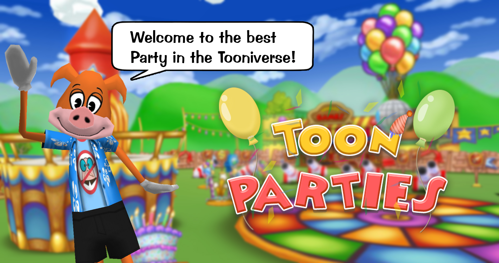
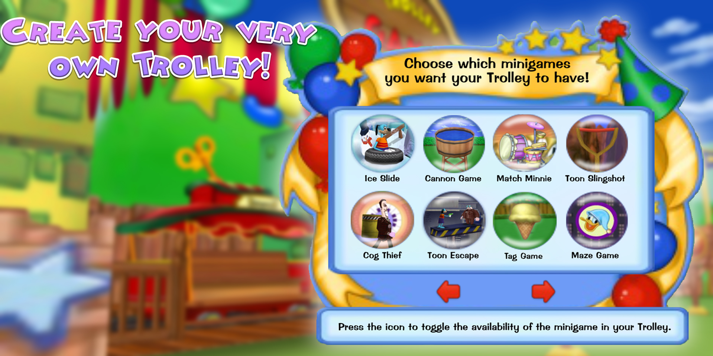

Come Party Like A Toon!
Posted by: Party Planner Pumpkin on February 8, 2020 at 4:01 PM
A LITTLE LOWER! NO, TO THE LEFT! A LOT MORE TO THE RIGHT! WAIT. RIGHT. LEFT. HOLD IT!!!! PERFECT!!! Ahh, here we are Toons! Welcome to the Party Gates! You know, years ago before we entered the Relived World we had these things called "Toon Parties." You may be asking "who am I"? I'm Party Planner Pumpkin! I work for the Toontown Party Planners Unit. We're an elite group of Party Planners waiting to help YOU! "You may be thinking how is this relevant?" The answer is this: Toon Parties are now available in Toontown Relived!

We've brought all your favorite activities... including the NEW Party Trolley! You need to select a minimum of three games to use this trolley at your party. Other activities such as Cog-O-War, Cannons, Trampolines, Fireworks, and more are also available! Want to plan a party? Just walk up to ANY member of the Toontown Party Planners Unit in ANY area with a Party Gate! Public Parties are also accessible via the stairs at the Party Gates! Remember: You need a minimum of 100 Jellybeans to plan a party, this covers the rental fee of the Party Grounds and your Party Clock!

Now there's something else we're supposed to mention... RIGHT!
Also in this update there's new enhancements to the Upgrade Shop on Silly Street! You can now upgrade up to the start of Minnie's Melodyland! Bill Board will help you out if you pay him handsomely! Need more reasons to be excited? New Just-For-Fun ToonTask Rewards are available! Get S.O.S. cards for completing select Just-For-Fun ToonTasks! S.O.S. cards offered vary based on your general ToonTask progress. On top of this, we've squashed more bugs than you can swat with a fly swatter! Geez, and that's a LOT of bug juice. YUCK!
Well, if you need me I'll be at the Party Gate! Drop in and come chat sometime why don't ya? Have a magical day--see you at the Party!